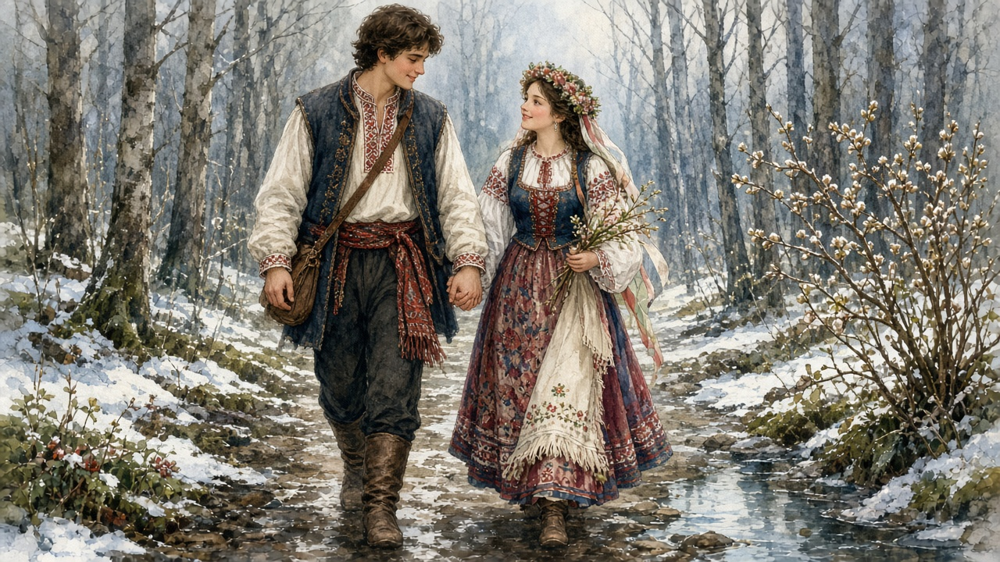

Dragobete
February 24. Pairing, a walk out of the yard, the first birds. Not a church feast. The hinge while winter is still on the stove.

What people mean
The date is fixed: the twenty-fourth of February. The name is a day, and in older talk a person. What people mean by it is pairing — who you walk with, whether the birds have started. Towns print hearts on it now. The older sense is thinner. It is late winter opening, not a dinner reservation. The calendar that holds that opening is on late winter on the year.
Walking out
In the tellings that still get said, young people go to the woods or the fields that day. They walk. They look for birds nesting, or for a flower that has no business being out yet. Some houses remember washing a face in leftover snow, or in spring water, as a small luck for the year. A kiss on the path — those sentences still get said, even in kitchens that no longer do the thing. Villages keep different pieces of this; this page does not flatten them into one national script. The point is being outside while the winter yard is still frost. Dragobete is not a bird list. It is a day people used to leave the stove for.
Not the thread, not a card
A few days later comes Mărțișor: a red-and-white pin you put on whether you are walking with anyone or not. Dragobete is the walk. The thread is the mark that March has started. Towns now sell February 24 as Valentine’s Day with a Romanian name — cards, roses, a table for two. The imported day is the fourteenth. This one is older talk about pairing and birds, and it does not need a card. One is about who you walk with. The other is a string. Both sit on the year.
On the year
After Christmas and Boboteaza the house is still in iarna. Dragobete is the first named turn. Then the pin on March 1. Then the long fast and Paște. June has Sânziene, another folk hinge, with yellow flowers in heat, not a pairing day in February frost. December has colinde at the door. This page is only the late-winter walk: birds, a path out of the yard, and a name that is not a saint’s. The wider talk of courtship — dor, the gate, the table — is on romance.